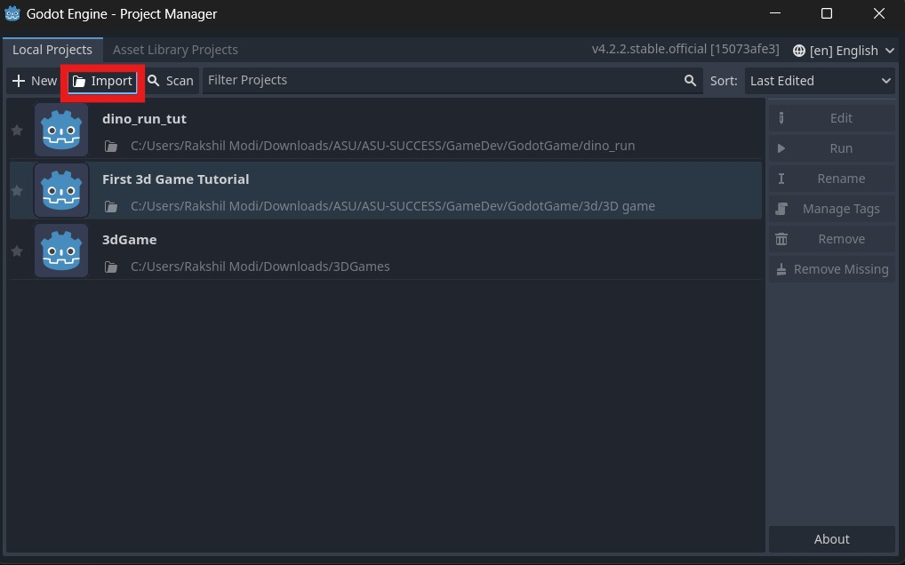
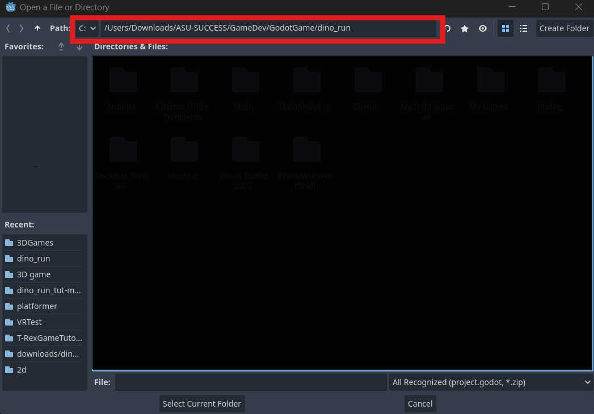
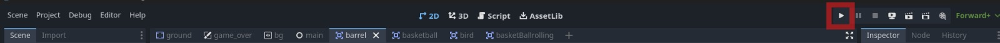
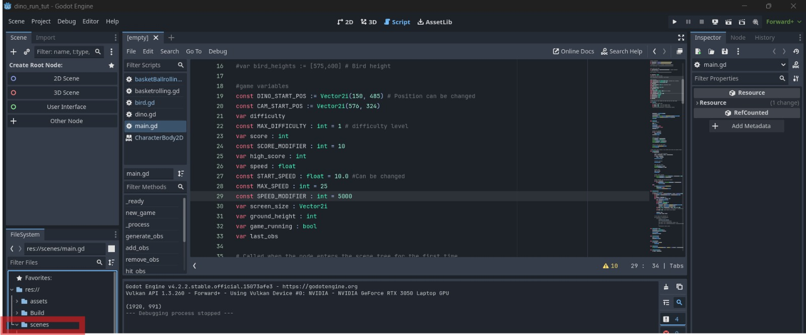
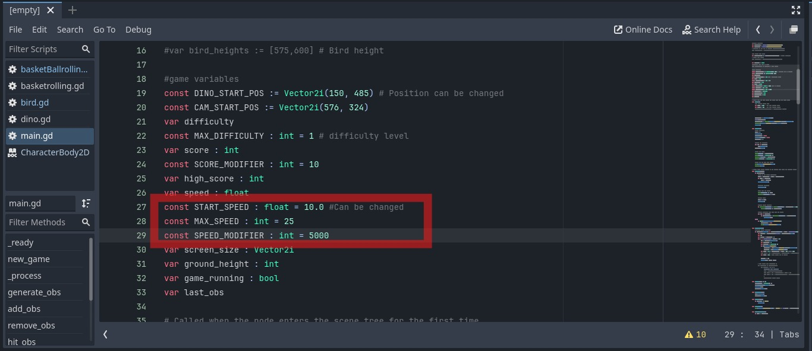
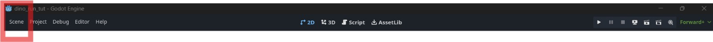
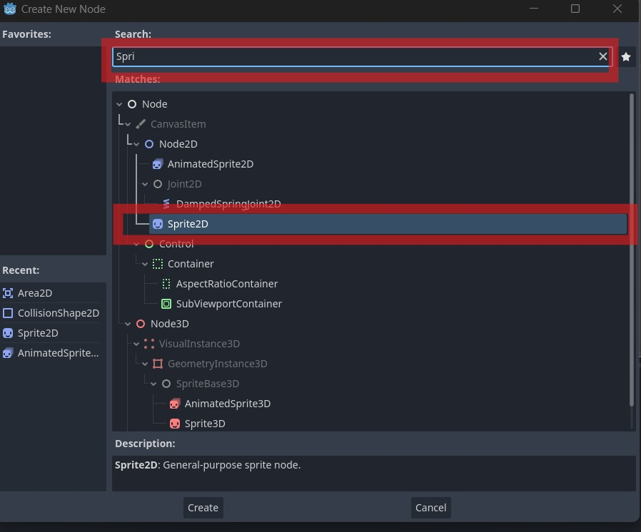
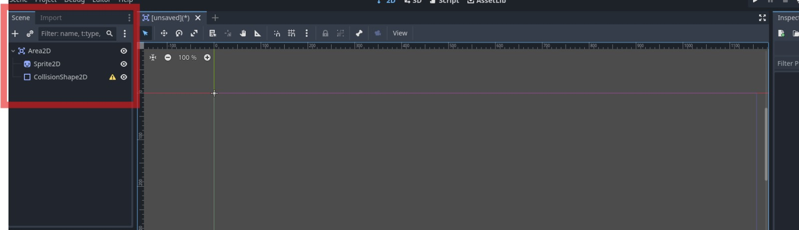
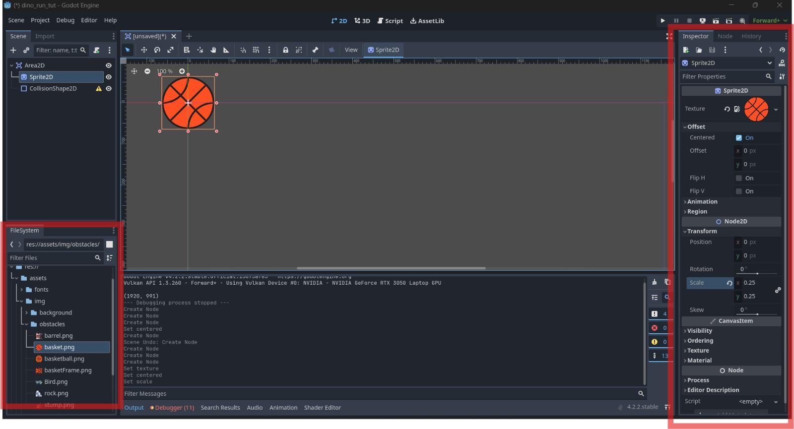

Open Godot_v4.2.2-stable_win64 from
Godot_v4.2.2-stable_win64.exe folder
Click on import

Enter the following path in the dialog box:
/Users/Downloads/ASU-SUCCESS/GameDev/GodotGame/dino_run
and click on Select Current Folder button below.

Click on Import and Edit and then open the project by
click on Dino_run project.
Now the next step is to test and run the game to make sure
everything is working fine. Click on the play button.

Changing Parameters
Now the first thing you will do in this game is to change the
speed
Open main.gd file, to open that click on scenes on the bottom left
corner.

In the scenes folder click on main.gd file.
In this file there are 3 variables that you can tinker with
START_SPEED
MAX_SPEED
SPEED_MODIFIER
Try to play around with these to see how it affects the game.
START_SPEED is the speed at which the game starts, MAX_SPEED is
the maximum speed the game can reach and SPEED_MODIFIER is the
speed at which the game speeds up.
Save the file by pressing CTRL + S

Now you will be adding a new obstacle in the game, to do so, go to
line 7 and uncomment it by pressing
CTRL + /.
After doing that add the variable barrel_scene to
obstacle_types variable on line 10.
After adding your obstacle_types should look like this
var obstacle_types :=
[rock_scene,stump_scene,barrel_scene]
Creating Custom Obstacles
Click on Scenes from the Navigation bar and then click on New
Scene

Now Click on other nodes
Search for Area in the top dialog box and then click on Area2D
Now on the left pane, right click on Area2D and then click on
Add Child Node.
Type in Sprite in the search box and click on Sprite2D

Now on the left pane, right click on Area2D and then click on
Add Child Node.
Type in Collision in the search box and click on CollisionShape2D
If all the steps were done correctly then it should look like this

Now in the bottom left pane, go to
assets -> obstacles -> basket.png
Now click and drag basket.png to Sprite2D panel on the right and
drop it onto the texture pane.

Now change the properties Offset to centered and
Scale to 0.25 as shown in the image above.
Now click on the CollisionShape2D and then click on
the Shape property and then click on the
New CircleShape2D option.
Now click on the CircleShape2D and then change the
Radius to 63.89
Now press CTRL + S to save the scene and place the
scene in scene folder and give your scene a name as
basketball.tscn
Now go back to the main.gd file and add the basketball scene to
the obstacle_types variable.
For adding the scene use
preload("res://scenes/basketball.tscn") and give a
variable name to it using
var basketball_scene =
preload("res://scenes/basketball.tscn").
Now you can add the basketball scene to the obstacle_types
variable by adding basketball_scene to the list.
Now run the game using play button and you will see the new
obstacle in the game.
Animating the Bird
Navigate to main.gd
Uncomment line 12 by CTRL + /
Now uncomment line 16. This variable helps control
bird's height
Now uncomment lines starting from line 128 to
line 135. This will add bird to the scene.
Now press CTRL + S to save
Custom Animating Basketball
The next few steps are the same as we did while we added basketball.
Click on Scene -> New Scene
Click on Other Node then type area on the dialog box and click on Area2D.